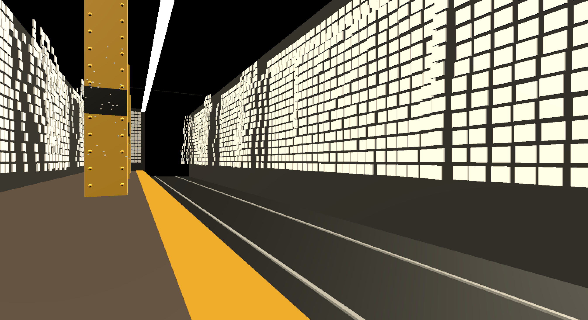
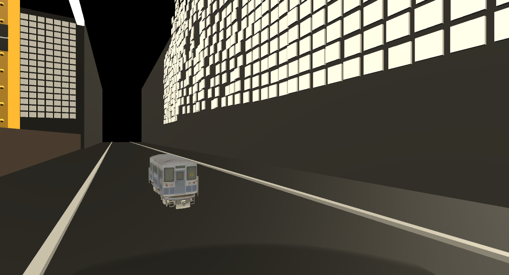
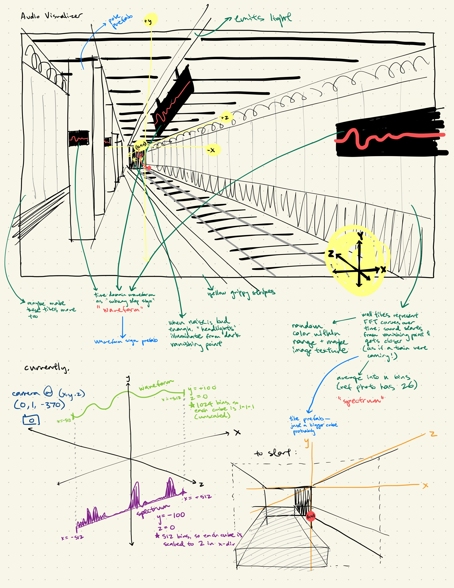
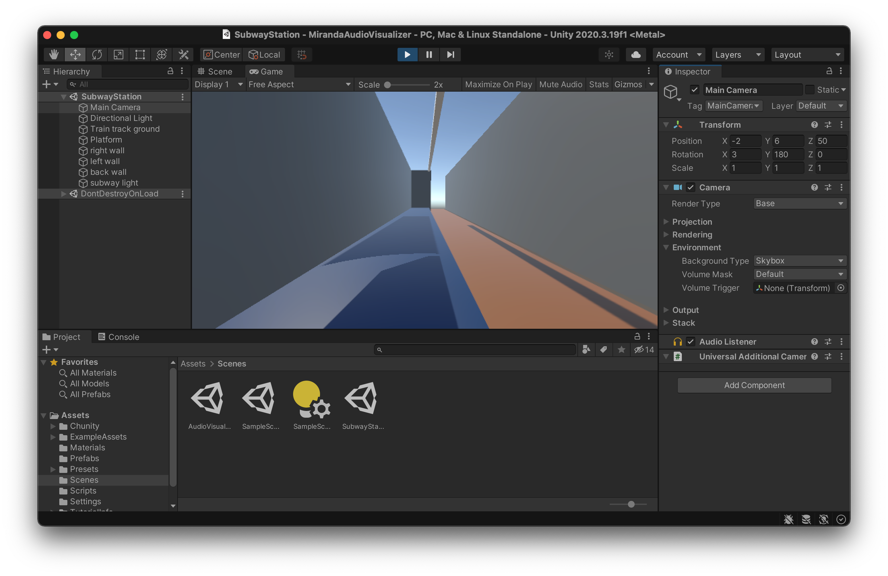

Last Train Home (Homework 2)
The Last Train Home is an audio visualizer inspired by waiting for the subway on an empty platform, late at night. I wanted to capture the emotions of:
- liminal space
- subtle dystopia
- magical realism
- the eeriness of apocalypse
- waiting, waiting, waiting
- everyday life in The Simulation
- absurdity & mundanity & how frequently they are the same
For the narrative part of the assignment, I chose to emulate Chopin's Nocturne in E-flat major, Opus 9, No. 2, in ChucK. The very end is the most important part. Here it is:
For reference, I implemented 3 keypress triggers:
- pressing 'N' plays the narrative / nocturne.
- pressing 'S' plays the subway train approaching noise, which I downloaded as an MP3 from here and converted to a .wav file.
- pressing 'T' summons the train, or, if the train has already been summoned, sends the train on its way. The camera movements which zoom in and out on the train are also triggered by pressing 'T'.
Here are some photos, and a video of the visualizer running with microphone input:
 
Here's the .zipped Unity project and here's the final build.
I had a lot of fun with this project, and given that it's the first project I've done in Unity, I'm quite proud of how it turned out. I encountered many difficulties getting situated with Unity, learning how to import assets, learning about scripting in Unity, learning about lighting, learning about animation in Unity, etc. A nontrivial part of the reason I decided to make the train very small and also only one car long was because I spent an entire day frustrated that my attempt to animate a 6-car, normal-sized train was messing my entire scene up and dropping the frame rate dramatically. Tiny train is gentle, unassuming, and easy to manage. Tiny train is my friend.
Having overcome the various learning curves I did to create this final product, I feel much more confident in my very novice Unity skillset than I did before. I would like to thank Kunwoo from the very bottom of my heart for all of his kindness and support throughout this process, and I'd like to thank whoever put a very nice-looking free subway train on the Unity asset store.
Milestone 1
I found the roll a ball tutorial to be really really informative and helpful. I think it might take me a second to get used to the ways in which certain Unity GUI interface interactions are required to link the variables to the code, but with my basic knowledge of animation and callbacks from past programming things I felt really really comfortable with all the code we wrote. I'm still a bit clunky navigating the scene in Unity but I know that will improve as I work.
The Chunity tutorial was also straightforward and helpful, and I liked that adding sound to roll-a-ball enhanced the gameplay a lot, in my opinion. I love the chaotic, spatialized, burbling pickup object. It doesn't seem too much harder than scripting in Unity to add Chuck into Unity (though I may regret saying this later).
sndpeek is funky. I had fun making stupid noises at my computer.
Sound visualizer ideas
Invisible train
Inspired by my love for public transit, I'm thinking of making a subway-station-inspired sound visualizer where the time series of FFT curves form a "tunnel" over a train track, and the raw signal is expressed as a sign on the wall of the station that one might familiarly imagine the station name or line name / train direction to be (e.g. West 4th Street). I'm not yet sure I know how to do this but I think it would be cute to have little people (or maybe just one little person, for ease of implementation) standing on the subway platform, with their earbuds in or reading, waiting for the train. When the user makes a sound, they can see it propagate through the tunnel and perturb the waveform on the subway sign.
Meadow
Another idea I have is to use the sound wave as a faraway mountain range, and the multiple FFT curves as a meadow of "grass" -- when the FFT peaks past a threshold at a certain frequency, a flower will be triggered to bloom and remain there for a second before fading out again.
Progress update, 10/6/21
I decided to go with the subway station / invisible train idea. I've since done some more detailed drawing and planning. Here's a set of links to the reference / inspiration photos I've found online of the NYC subway system, and here's an iPad sketch / brain dump of what I've got so far:  Essentially, the subway signs which usually denote the stop name will have the waveform on them, and the spectrum will be represented by the subway tiles on the walls. My initial idea was to have the spectrum as a tunnel, but as it turns out, subway tunnels are more rectangular than I thought, and also I wanted to evoke the feeling of hearing the train coming and feeling the tremendous sound coming at you from the depths of the tunnel.
I've begun (emphasis on begun) drafting a little model of the subway station in a separate scene, which I'm thinking will serve as a useful prototype just to get all the lighting and other objects done so that when I'm ready to incorporate the waveform I can easily scale most things by a multiplicative factor and implement the audio responsiveness. Here's the very unimpressive thing I've got so far: 
Progress update, 10/11/21
Here's a video of my visualizer: https://youtu.be/TIpXlrWhHEM